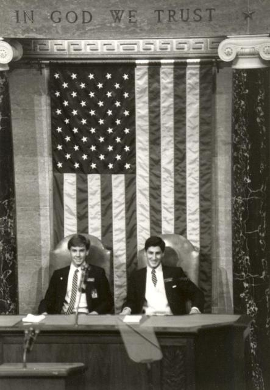

This is me and my buddy David Parker prior to President Ronald
Reagan's 1985 State of the Union Address. I am in the Vice-President's
(George H. W. Bush's) chair. Dave is in the Speaker of the House's
(Tip O'Neil's) chair. Cameras are not normally allowed on the House
floor or in the Gallery -- we managed to get a wire service
photographer to take this picture. In the 200 year history of
Congressional Pages,
this is the only known picture of pages seated on the Speaker's dais.
